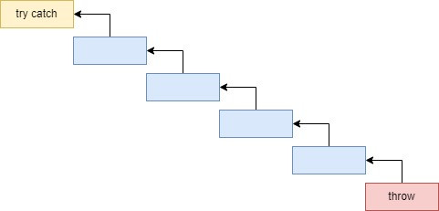

Исключения — это базовый инструментарий почти любого классического языка программирования, позволяющий элегантно обрабатывать ошибочные сценарии. Однако вся мощь механизма исключений большинством разработчиков не используется или интерпретируется неверно.
В первую очередь следует понимать, что исключения — это синтаксический сахар. Реализовать обработку ошибок можно и обычными if...else, но кода будет намного больше. А если механизм исключений используется неправильно, то преимущества такого синтаксического сахара просто не используются, вы получаете тот же if...else, только обогащаете код «ненужным в этом случае синтаксисом».
Исключение — это объект, содержащий информацию о произошедшей исключительной ситуации. Информация может быть произвольной: благодаря наследованию, мы можем определять свои структуры данных для кастомных исключений.
Например, в следующем коде определяется собственное исключение, сообщающее, что ресурс не найден. По типу исключения мы понимаем его суть, а по полям user и resourceId мы понимаем, кто пытался запросить ресурс и какой именно. Имея такую информацию в логах, становится сильно проще разбираться в причинах проблемы.
public class ResourceNotFoundException extends RuntimeException {
private final User user;
private final String resourceId;
public ResourceNotFoundException(String resourceId, User user) {
super("Ресурс с id " + resourceId + " не найден. Пользователь: " + user.toString());
this.resourceId = resourceId;
}
}
В чем заключается синтаксический сахар исключений? А в том, что в цепочке вызовов методов не требуется прокидывать объект с информацией об ошибке. Между throw и try‑catch может быть сколько угодно промежуточных методов, которые ничего не будут знать об этом исключении.

Цепочка методов, через которые перебрасывается исключение
Метод, организующий try‑catch, несет ответственность за обработку заданных исключений. Очень важно навешивать ответственность за обработку исключений архитектурно правильно для прозрачности кода. Более того, если метод несет ответственность за обработку исключений, он больше не должен на себя брать никакой ответственности, то есть логики в нем не должно быть.
Взглянем на следующий код:
public T execute(Object[] params) {
try {
Task task = generateTask();
String id = task.id;
if (params.size() > 0) {
fixParams(id, params);
return task.run(params);
} else {
return task.run();
}
} catch (Exception e) {
log(e.getMessage());
}
}
В этом коде прослеживается логика внутри блока try. Это затрудняет чтение особенно из‑за возникшего внутреннего условного оператора — дополнительный уровень вложенности.
А вот так должен выглядеть метод, который несет ответственность только за обработку исключений:
public T execute(Object[] params) {
try {
executeTask(params);
} catch (Exception e) {
log(e.getMessage());
}
}
Метод, организующий try catch блок, является замыкающим: вся цепочка методов, вызываемых после него, не имеет try catch блока совсем — там реализуется исключительно бизнес‑логика. Согласитесь, намного приятнее выглядит метод прошлого примера без try‑catch блока?
public T executeTask(Object[] params) {
Task task = generateTask();
String id = task.id;
if (params.size() > 0) {
fixParams(id, params);
return task.run(params);
} else {
return task.run();
}
}
Метод должен иметь минимальное количество уровней вложенности: лишний вложенный if уже затрудняет чтение, так же как и блок try. Идеальная структура метода, несущего ответственность за обработку исключений, выглядит следующим образом:
// Реализация метода
try {
// Вызов метода-обработчика (одна строка)
} catch (MyException e) {
// Логика обработки исключения (любое число строк)
} catch (MyException2 e) {
// Логика обработки исключения 2 (любое число строк)
...
} catch (MyExceptionN e) {
// Логика обработки исключения N (любое число строк)
}
В таком методе акцент только на обработке исключений. В блоке try ничего нет кроме вызова какой‑то операции. При этом обработка отдельного исключения реализуется одним из следующих вариантов:
Важно отметить, что крайне не рекомендуется в методе, отвечающем за обработку исключений, смешивать разные варианты из представленных 4-х. Давайте рассмотрим примеры кода для каждого варианта:
try {
// ...
} catch (MyException e) {
// Логирование в случае получения кастомного исключения (пишем все доступные поля в лог)
log(buildMessage(e.getProcessId(), e.getMessage()));
} catch (Exception e) {
// Логирование всех остальных исключений с менее подробной информацией
// (исключения, которые разработчик не предусмотрел)
log(e.getMessage());
}
try {
// ...
} catch (ArgumentException e) {
// Переброс исключения, до-обогащая processId
throw new MyException(processId, e.getMessage());
}
try {
JsonNode json = parseToJson(content);
processJson(json);
} catch (ArgumentException e) {
// Обработка строки
processString(content);
}
try {
// Возвращаем успешный результат
return ResponseEntity.body(execute(id));
} catch (Exception e) {
// Возвращаем тело ошибки
return ResponseEntity.body(buildError(e));
}
Для максимальной прозрачности кода рекомендуется документировать методы вместе с возможными исключениями, которые могут быть важны для пользователя. В Java мы можем использовать @throws для документации:
/**
* Преобразовать перечень элементов в список строк
* @param items Перечень элементов
* @return Скомпонованный список
* @throws NullPointerException Передан нулевой элемент или список
* @throws IncorrectJsonException Не удается преобразовать в json элемент
*/
public ArrayList<String> flat(Iterable items, ObjectMapper mapper)
Теперь, если мы захотим вызвать этот метод, мы сразу увидим, к чему быть готовым. При этом указание исключения вовсе не означает, что надо его обрабатывать, мы можем выполнить предварительные проверки. Например, нас предупредили, что может быть NullPointerException, значит, нам надо убедиться, что наш код никак не передаст в качестве items null. То же касается и IncorrectJsonException — вероятно, мы проверки сделаем предварительно, и не придется выполнять try‑catch.
if (items != null)
// Гарантируем, что items не равен null (try catch не нужен для NullPointerException)
return flat(items, objectMapper);
else
return new ArrayList<>();
Ключевое слово throws для объявляемых исключений, к сожалению, часто создает загромождение в коде. Иногда мы гарантируем, что исключение не может быть выброшено бизнес‑логикой, но ключевое слово throws все равно вынуждает нас писать try catch. В этом плане даже Роберт Мартин в своей книге «Чистый код» говорит о ненужности throws и рекомендует не работать с объявляемыми исключениями — пере‑выбрасывать в не объявляемые. Код ниже демонстрирует сигнатуру метода, который вынуждает обработать JsonProcessingException.
// Вынуждаем снаружи обрабатывать исключение JsonProcessingException, хотя наш код
// мог бы гарантировать, что такого исключения не может быть
public ArrayList<String> flat(Iterable items, ObjectMapper mapper)
throws JsonProcessingException
Исключения — наши помощники, когда речь идет о разработке очень крупной и сложной системы. Исключения помогают разработать стабильный код, который будет работать в любой ситуации и правильно реагировать на любые возникшие проблемы. Если вы научитесь понимать, кто из объектов и методов должен нести ответственность за обработку исключений, вы сможете строить стабильные и надежные системы произвольной сложности.
Хороших всем разработок!